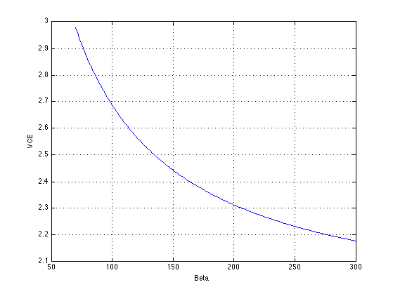
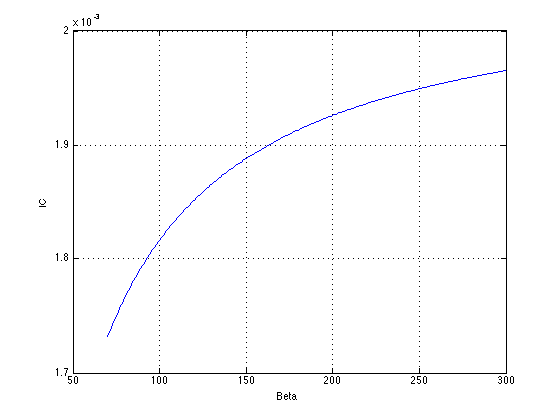

Contents
Exercise 2.1
clc;
clear all;
VCC = 9;
VEE = 0;
VA = Inf;
R1 = 6.8e3;
R2 = 30e3;
RC = 3e3;
RE = 470;
Beta = 100;
VBE = 0.7;
[VCE IC] = findQP(R1,R2,RC,RE,Beta,VCC,VEE,VA);
fprintf('Exercise 2.1\n');
fprintf('VCE = %0.3f V\n',VCE);
fprintf('IC = %0.3f mA\n\n',IC*1e3);
Exercise 2.1
VCE = 2.688 V
IC = 1.817 mA
Exercise 2.2
Beta = 70:1:300;
[VCE IC] = findQP(R1,R2,RC,RE,Beta,VCC,VEE,VA);
plot(Beta,VCE);
xlabel('Beta');
ylabel('VCE');
grid on;
figure
plot(Beta,IC);
xlabel('Beta');
ylabel('IC');
grid on;
fprintf('Exercise 2.2\n');
fprintf('VCE Min: %0.3f Max: %0.3f (V)\n',min(VCE),max(VCE));
fprintf('IC Min: %0.3f Max: %0.3f (mA)\n\n',min(IC*1e3),max(IC*1e3));
Exercise 2.2
VCE Min: 2.178 Max: 2.977 (V)
IC Min: 1.732 Max: 1.965 (mA)
 
Exercise 2.3
f = 1e3;
w = 2*pi*f;
C = [1e-12 1e-9 1e-6];
Z = -j./(w .* C)
Z =
1.0e+08 *
0 - 1.5915i 0 - 0.0016i 0 - 0.0000i
Exercise 2.4
Beta = 100;
RL = 10e3;
RS = 0;
[AV,AVDB,RIN,ROUT,GM,RPI] = Analog_findGAINfunc(R1,R2,RC,RE,Beta,VCC,VEE,VA,RS,RL)
AV =
-162.4867
AVDB =
44.2164
RIN =
4.9740e+03
ROUT =
3000
GM =
0.0704
RPI =
1.4202e+03